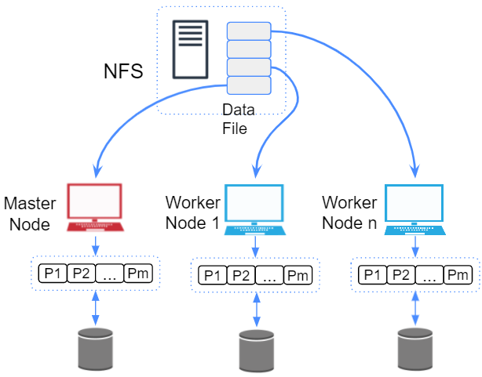

This is an ongoing research.
k-mer counting is the process of counting k length substrings in a sequence. It is an important step in many bioinformatics applications including genome assembly, sequence error correction, and sequence alignment. Even though generating k-mer histograms seems simple and straightforward, processing large datasets efficiently with limited resources, especially memory, is very challenging. As the advancements in next-generation sequencing technologies have resulted in a tremendous growth of genomic data, it is inevitable for k-mer counters to be faster and more efficient. A lot of work has been done in the past decade to optimize k-mer counting.
The existing distributed memory solutions are specialized for high performance clusters and high speed networks which are costly to implement. Hence, the focus of this research is to build a k-mer counting and querying tool which is optimized for commodity clusters.